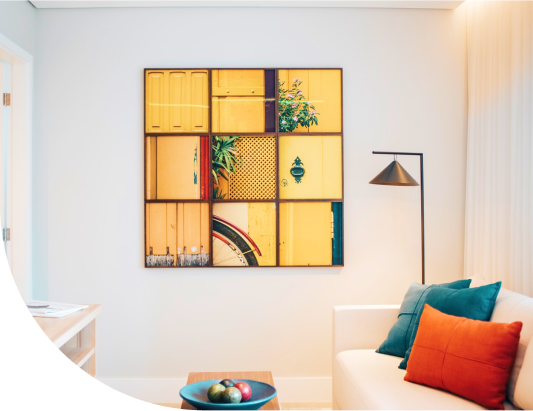

Tailwind CSS
Esta página foi construída com Tailwind CSS.
Esse design foi providenciado gratuitamente no FIGMA.
Esse projeto é um estudo feito por Nycollas Kaique.
Clique no botão abaixo para ir para a página construída com SASS.
